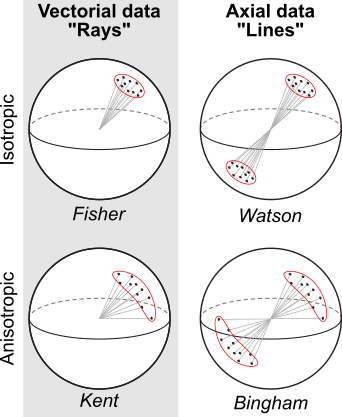

This tutorial introduces the different data types existing in spherical geometry (in particular those used in structural geology).
Data types
Depending on the symmetry of the orientation data, different data types are used to represent orientations in 3D space. The main data types used in structural geology are Rays, Lines, Planes, Pairs, and Faults.

Distinguishing these data types is important because the different symmetries imply different statistical assumptions for their distribution. In other words the different data types require different statistical “treatments”.
Don’t worry, once you decided on the symmetry nature of your data, {structr} does the heavy lifting and will (mostly) automatically decide which math operations are appropriate to deal with your data. Below are some more details on the different data types to help you with this important decision.
Rays (vectorial data)
A Ray is a line with a preferred direction along that line, i.e. a line with a single start point extending indefinitely in only one direction (equivalent to a direction in 2D). Examples of ray-like data include a slip direction, paleomagnetic direction (unless magnetic reversals are involved), a vorticity vector describing the sense of slip on a fault, etc.
Ray(120, 30, sense = -1)
#> Ray object (n = 1):
#> azimuth plunge
#> 300 -30Lines (axial data)
A Line extends infinitely in both directions (equivalent to an axis in 2D). Examples of line-like data include principal stress directions, strain ellipsoid directions (e.g. stretching lineation), intersection, fault striae, and crystallographic axes.
Line(120, 30)
#> Line object (n = 1):
#> azimuth plunge
#> 120 30Poles to planes
A Plane orientation is described by the normal vector to a plane. This vector is usually a Line, but can be a Ray if the younging direction of planes is known. Examples include the pole to a bedding plane, the pole to a foliation, etc.
Plane(120, 30)
#> Plane object (n = 1):
#> dip_direction dip
#> 120 30Pairs (Plane + Line)
A Pair consists of a Plane and a Line contained in that plane. Examples are stretching lineations on a foliation plane.
structr::Pair(120, 30, 75, 15)
#> Pair object (n = 1):
#> dip_direction dip azimuth plunge
#> 120 30 75 15Fault (Plane + Ray)
A Fault is a special case of a Pair, when the line component is a Ray object. In other words, a combination of a plane and a line where the slip direction or sense of motion is known.
Fault(120, 30, 75, 15, sense = -1)
#> Fault object (n = 1):
#> dip_direction dip azimuth plunge sense
#> 120 30 75 15 -1Cartesian coordinates
In general orientation data are expressed in Cartesian Coordinates, that are three-element vectors that represent points or directions in a 3D Cartesian coordinate system given by the direction cosines along the X, Y, and Z axes.
Vec3(1, 0, 0)
#> Vector (Vec3) object (n = 1):
#> x y z
#> 1 0 0Conversions
Any of the spherical objects (Ray, Line, Plane, Pair, Fault) can be transformed to Cartesian coordinates, or into any other spherical data type, using the object creator function Vec3(), Line(), Plane(), Ray(), Pair(), or Fault() functions. For example:
Line(120, 30) |> Vec3()
#> Vector (Vec3) object (n = 1):
#> x y z
#> -0.4330127 0.7500000 0.5000000
Plane(120, 30) |> Line()
#> Line object (n = 1):
#> azimuth plunge
#> 300 60
# Combining a plane and a line to a pair:
Pair(Plane(120, 30), Line(120, 30))
#> Pair object (n = 1):
#> dip_direction dip azimuth plunge
#> 120 30 120 30You can also convert into other data types without transformation, using as.<data type>() functions. For example, converting a Line into a Plane:
Tip
The functions
as.Vec3(),as.Ray(),as.Line(),as.Plane(),as.Pair(), andas.Fault()force a spherical object to be coerced into another data type without transformation.
Example
Usually orientation data is stored in a table containing the column dip direction (or strike) and the dip angle of a measured plane…
or the trend (azimuth) and plunge (inclination) of a measured line…
To convert these data frames to spherical objects, use the Plane() and Line() functions from the structr package. These functions take the dip direction and dip angle for planes, and the trend and plunge for lines as arguments.
Tip
If the raw data was imported using
read_strabo_JSON()this step is not necessary as the data will come already in the correct format.
The spherical objects can be easily converted into Cartesian coordinate vectors using the function Vec3():
lines_vector <- Vec3(lines)
head(lines_vector)
#> Vector (Vec3) object (n = 6):
#> x y z
#> [1,] 0.5727204 0.7882819 0.2249511
#> [2,] 0.4682901 0.8448178 0.2588190
#> [3,] 0.2674497 0.9327081 0.2419219
#> [4,] 0.1641876 0.9311540 0.3255682
#> [5,] 0.4341533 0.8520738 0.2923717
#> [6,] 0.2382466 0.9555548 0.1736482Convert a Plane’s pole to a Line: